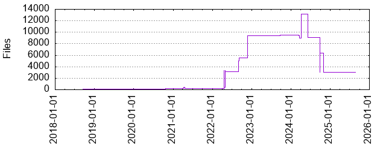

Files
- Total files
- 1632
- Total lines
- 702286
- Average file size
- 12446.87 bytes

| Extension | Files (%) | Lines (%) | Lines/file |
|---|
| Makefile | 2 (0.12%) | 76 (0.01%) | 38 |
| S | 2 (0.12%) | 460 (0.07%) | 230 |
| TXT | 1 (0.06%) | 292 (0.04%) | 292 |
| Thtml | 1 (0.06%) | 569 (0.08%) | 569 |
| asm | 1 (0.06%) | 48 (0.01%) | 48 |
| backup | 1 (0.06%) | 678 (0.10%) | 678 |
| bak | 1 (0.06%) | 161 (0.02%) | 161 |
| bmp | 4 (0.25%) | 657 (0.09%) | 164 |
| c | 3 (0.18%) | 1103 (0.16%) | 367 |
| cache | 1 (0.06%) | 979 (0.14%) | 979 |
| css | 1 (0.06%) | 145 (0.02%) | 145 |
| dat | 10 (0.61%) | 1841 (0.26%) | 184 |
| desktop | 2 (0.12%) | 75 (0.01%) | 37 |
| f | 1 (0.06%) | 17 (0.00%) | 17 |
| gif | 4 (0.25%) | 39 (0.01%) | 9 |
| gz | 1 (0.06%) | 0 (0.00%) | 0 |
| html | 48 (2.94%) | 61487 (8.76%) | 1280 |
| ico | 1 (0.06%) | 789 (0.11%) | 789 |
| ino | 2 (0.12%) | 174 (0.02%) | 87 |
| js | 2 (0.12%) | 434 (0.06%) | 217 |
| lock | 1 (0.06%) | 0 (0.00%) | 0 |
| md | 2 (0.12%) | 248 (0.04%) | 124 |
| md5 | 293 (17.95%) | 0 (0.00%) | 0 |
| mp3 | 1 (0.06%) | 178 (0.03%) | 178 |
| mup | 8 (0.49%) | 1961 (0.28%) | 245 |
| nsi | 1 (0.06%) | 280 (0.04%) | 280 |
| old | 3 (0.18%) | 312 (0.04%) | 104 |
| org | 1 (0.06%) | 1 (0.00%) | 1 |
| pdf | 293 (17.95%) | 49480 (7.05%) | 168 |
| ped | 2 (0.12%) | 0 (0.00%) | 0 |
| php | 2 (0.12%) | 56 (0.01%) | 28 |
| pidx | 1 (0.06%) | 0 (0.00%) | 0 |
| plot | 10 (0.61%) | 127 (0.02%) | 12 |
| png | 26 (1.59%) | 4867 (0.69%) | 187 |
| po | 2 (0.12%) | 289 (0.04%) | 144 |
| py | 130 (7.97%) | 41725 (5.94%) | 320 |
| pydb | 1 (0.06%) | 0 (0.00%) | 0 |
| root | 1 (0.06%) | 23 (0.00%) | 23 |
| rtf | 2 (0.12%) | 748 (0.11%) | 374 |
| sh | 12 (0.74%) | 175 (0.02%) | 14 |
| sty | 3 (0.18%) | 3581 (0.51%) | 1193 |
| substvars | 1 (0.06%) | 2 (0.00%) | 2 |
| svg | 3 (0.18%) | 361 (0.05%) | 120 |
| tex | 700 (42.89%) | 69607 (9.91%) | 99 |
| txt | 14 (0.86%) | 432133 (61.53%) | 30866 |
| uni | 1 (0.06%) | 2 (0.00%) | 2 |
| utf | 1 (0.06%) | 65 (0.01%) | 65 |
| wav | 1 (0.06%) | 2488 (0.35%) | 2488 |
| xcf | 2 (0.12%) | 4104 (0.58%) | 2052 |
| yml | 1 (0.06%) | 7 (0.00%) | 7 |